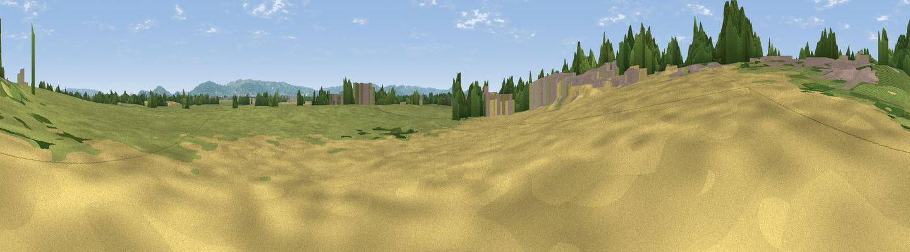

Coombe Hill
#39516 in England · top 83% of its area beats it · near LeighWhere it is
The exact computed spot (SO 89059 27167). Click the marker for map links.
The view, rendered

A 360° render of this exact spot computed from the terrain model, tree cover and land cover — summer colours, afternoon light, calibrated against photographs of famous viewpoints. Real trees, hedges and buildings will differ in detail.
The panorama
Grey silhouette: terrain skyline in each direction (720 bearings, Earth curvature and refraction included). Dashed green: skyline with trees (+15 m) and buildings (+8 m) as obstacles. Blue strip: how far the ground is visible on each bearing.
Where the view opens
Wedge length = distance to the farthest visible ground on that bearing (vegetation-aware). Rings at 10, 25 and 50 km.
What fills the view
55% grassland · 22% woodland · 18% cropland · 5% built-up
Angular shares of the visible panorama (visual magnitude), not map area. Landscape diversity 0.49 (0–1 Shannon).
Key numbers
More beautiful places nearby
The staircase of upgrades: each row has a higher view potential than everything closer. Driving times are estimates from straight-line distance, calibrated against real road routing — check an actual route before setting out.
| Place | Direction | Drive | Score |
|---|---|---|---|
| Willow Hill | WNW · 3 km | ~7 min | 54.5 |
| Viewpoint near Deerhurst | N · 4 km | ~9 min | 56.3 |
| Sandhurst Hill | WSW · 6 km | ~12 min | 58.0 |
| Viewpoint near Sandhurst | WSW · 6 km | ~13 min | 66.7 |
| Corse Grove Hill | W · 6 km | ~14 min | 67.6 |
| Viewpoint near Churchdown | S · 8 km | ~16 min | 74.6 |
| Nottingham Hill | E · 9 km | ~18 min | 80.9 |
| Viewpoint near Bredon's Norton | NNE · 14 km | ~25 min | 81.3 |
51.94289, -2.16057 · source: osm peak · position refined by local search. Computed location — check access rights before visiting.